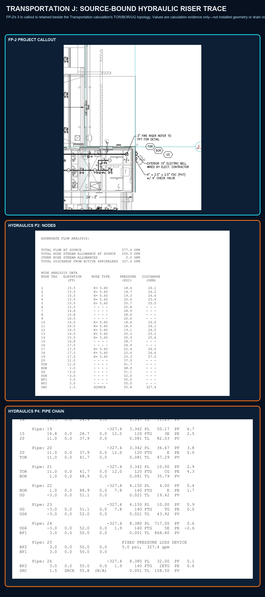

Transportation J - hydraulic riser trace
Actual FP-2 and Transportation hydraulic source pages are retained together. TOR, BOR, underground, supply, demand, and hydraulic pipe-chain values are calculation evidence only. Installed XY, materials, fittings, drains, fabrication, and release remain held.
Project calculation topology retainedFP-2 callout retainedField geometry and drains held
